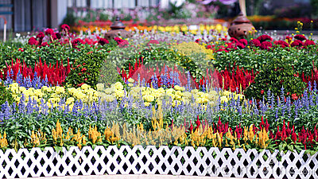

The Story of Flowers R Us
Flowers R Us was first founded by John Keenan in 1996 in Savanna, Georgia. John always loved the moments he spent with his mother in the garden, tending to the tulips and roses. When he turned 18, he set out to open his own florist shop and live his dream. John bought a tiny shop, conditioned the backyard of it, and began to shape his dream of growing the best flowers he could. People came to see the amount of effort went into these flowers, and so his business began to grow. Before he knew it, he had hired 3 workers to help around the garden and shop. With the help of these new employees and John's family, the business had nowhere go but up. While John would be in the garden, tending to his flowers or making an order for someone, his wife would be handling the storefront. By this time, John had married his High-School sweetheart, Jessica. They both worked hard with their new employees to grow the business. John's business was doing pretty good for itself, but John new that if he could make his products accessible to more people, it would help his company that he loved more. So, with this in mind, he decided to contract someone out to make a website for his business. With the launch of Flowers R Us' website, it marks a significant stride in Mr. Keenan's beloved business. The ability to reach a broader pool of potential customers and a way for them to purchase products from out of state didn't just bring his business into the 21st century, it catapulted it into the foreground of websites that offer breath-taking arrangements and products to grow your own magnificent flowers!
Our Guarantee

We strive for perfection here at Flowers R Us. Whether it be our flowers, which are constantly being cared for and nurtured. We mix our soil with premium organic compost, water them daily, and spray environment-safe insecticide. Mr. Keenan is constantly finding new combinations of flowers to inspire his customers. The garden is in direct sunlight for most of the day, so all of our plants get the nutrients they need to flourish and look beautiful. Speaking of the garden, all of our plants and flowers are grown on site with the help of the Flowers R Us staff. All of our products are cut-per-order, delicately prepared and packaged, and sent off with care straight to you or your loved ones doorstep.
That is the guarantee that you receive when becoming a patron of Flowers R Us. If for any reason you are not
satisfied with what you received, we offer a full money-back guarantee. We strive to provide the best services
to those who make their business with us. Of course, there probably won't be a need for a guarantee, as we
inspect all of our products before they leave the shop! Quality is our policy!
The following is our guarantee:
- Quality Products
- Low Prices
- Fast Customer Support
- Money-back Guarantee